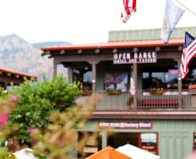
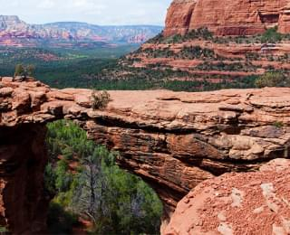

Sedona - туристический сайт
СЕДОНА — небольшой городок в АРИЗОНЕ, зАСЛУЖИвающий большего!
Рассмотрим 5 причин, по которым Седона круче, чем гранд каньон!
Наши преимушества
НАСТОЯЩИЙ ГОРОДОК
— №1 —
СЕДОНА НЕ АТТРАКЦИОН ДЛЯ ТУРИСТОВ, ТАМ ТЕЧЕТ СВОЯ ЖИЗНЬ
 - Жилье
- Рекомендуем пожить в настоящем мотеле, все как в кино!
- ЕДА
- Всегда заказывайте ФИРМЕННЫЙ БУРГЕР, Вы НЕ разочаруетесь!
- СУВЕНИРЫ
- Не только китайского, но и местного производства!
ТАМ ЕСТЬ Мост дьявола
— №2 —
Да, по нему можно пройти! Если вы осмелитесь, конечно
 НЕБОЛЬШАЯ ПЛОЩАДь
— №3 —
ВСЕ интересные места находятся очень близко
КРАСИВАЯ ДОРОГА
— №4 —
ЕХАТЬ В СЕДОНУ ИЗ ЛАС-ВЕГАСА совсем НЕ СКУЧНО!
МАЛО ТУРИСТОВ
— №5 —
Большинство едет в гранд каньони толпится там
ЗАИНТЕРЕСОВАЛИСЬ?
Укажите предполагаемые даты поездки, и мы покажем вам лучшие предложения гостиниц в седоне